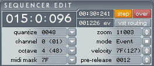
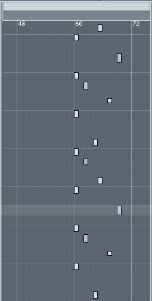
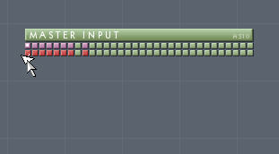

Aodix v4 Interface Detailed Documentation
Please read the
Overview and the
Getting Started sections in order to have Aodix v4 running properly, before reading this section.
This section describes in detail all the interface elements.
Contents :
1. Audio Master section
2. Sequencer Edit Section
3. VST Instance List
4. VST Parameters
5. Info, Vumeters
6. Sequencer
(all objects and behaviors, mouse and
keyboard, arrangement and syntaxes...)
7. Routing
8. Menu Items
Aodix Interface
Big counter ---:-:--- : displays
absolute midi-point counter.
Counter hh:mm:ss : displays hh:mm:ss issued from midi-point conversion. Be careful, tempo
changes inside a project make this counter irrelevant.
Counter % DSP : displays CPU load for DSP and sequencer processing.
Tempo : sets tempo for
global project, or modify tempo, recordable with Aut.
Time Sig : sets time signature for the whole project 4:4 or 3:4.
PPQN : sets the amount of Points Per Quarter Note (or points per beat). 192
is usually more
than enough.
Block Size : displays system processing block size (in samples). To
change it, open your
ASIO control panel. Your soundcard manufacturer provides you with a simple
way to access it. You may also open the control panel by clicking on the
"ASIO Drv" button (see "Configuration" section : 5).
We recommend that you start with 512 samples, decrease it until you hear
clicks while playing sounds. Some systems can handle 64 easily. Some others
will run fine with 256 or 512.
Now if your control panel displays milliseconds instead of samples, then
begin with a value around 15ms and tweak it using the same method.
Cycle (F3) : toggles
cycling. If set, transport will loop inside
the Start/End
cues.
(Start, End : see
"Sequencer" section).
Live (F4) : toggles live mode. If set, you will record events at the
transport scrollbar.
If not set, you will record events at the static cursor
position (see hints).
Stop-Wrap (F5) : if set, when you Stop transport, the cursor will
position exactly at the
time index you have actually stopped (So you can resume from this exact
point).
Play (Spacebar): transport play from current position, can be used with any REC/AUT
combination.
Stop (Spacebar): stop player or bouncer.
Rec (F1) : press to record midi events (read about "Midi Mask" in
Edit
section).
Aut (F2) : press to record automation events of VST parameters and tempo
changes.
Hint 1 - PLAY REC AUT
PLAY + REC : record midi events
while playing (according to the "Midi Mask").
PLAY + AUT : record only VST
parameter automation events and tempo changes.
PLAY +REC + AUT : record
midi (according to "Midi Mask") and VST automation.
Hint 2 - Live on/off
operating modes (with PLAY and REC/AUT) :
Live on :
It's the traditional online mode where you watch the transport scrolling
and record at
the current position of the transport scrollbar.
Live off :
special mode in which you record at any position you want (static)
meanwhile the
song is playing or looping somewhere else, that you
see, or don't see.
It's an offline editing mode
(even though transport
is playing).
Hint 3 - Offline editing modes :
An offline mode is one of these two modes
- Live off +
Transport Play
-Transport
off (Stop)
Offline editing is
about recording events when NOT playing; or recording events when
playing and "live" is set to "Off".
In offline modes, the "Step" and "Pre-release" settings become very important (see Edit
section below). These modes are adapted to intensive keyboard and mouse operation.

Big counter ---:-:---: displays
absolute midi-point counter.
Counter hh:mm:ss : displays hh:mm:ss issued from midi points. Be careful, tempo changes inside
a project make this counter irrelevant).
Counter ##### Ev. : displays the total
number
of events in the project.
Step (F6): if set, while
editing, the cursor automatically jumps to the next timeline position,
depending on
how much the value of "Quantize" is.
Over (F7) : if set, a recorded event will overwrite (replace) an existing one at the place
you are recording.
If not set, you may record as many events as you want at a
same position.
Switch "Over" off if you wish to record chords.
VST Routing/Sequencer (F8) : toggle the sequencer/routing view in the main view
area.
Quantize (Ctrl+1/2) : sets
quantize value, including "free" for quantize-free operation.
Channel (Ctrl+3/4): sets midi channel for PC keyboard operation from hex 0x00 (#1)
to hex 0x0F (#16).
Octave (Ctrl+5/6) : sets octave reference (also sets the center of
the pianoroll).
Zoom (Ctrl + Mouse Wheel) : sets display zoom. Reset to default by double-clicking on it.
Mode : sets "Note" to record events, and "Pattern" to enter pattern calls
(for PC Keyboard
operation)
Velocity : sets velocity for PC keyboard operation (0=random). Reset to
0x64 (=100 decimal)
by double-clicking on it.
Pre-Release :
acts as a note length reduction (points), for recording in offline modes only.
Reset to
default by double-clicking on it. (Read
Note below). Also, be careful
that it is always less than the Quantize value (in midi points), except in some
special cases.
Midi mask : this mask is taken into account when using a midi keyboard,
or importing a midi
file. In the case of an incoming midi message from keyboard, the message is
acknowledged and recorded if its type is set in the Midi Mask. To set/unset
types,
click on the "Midi-Mask" button. Tick the types that you want the input system
to acknowledge, and
remove tick from those that you wish to be ignored :
8 : note-off (recommended to be set)
9 : note-on (set, remove for safety if you only want to use
knobs/faders on your
midi keyboard)
A : Aftertouch (usually set)
B : MidiCC (set, remove for pure VST automation operation,
see section 4 below)
C : Program Change (usually set)
D : Channel Pressure (usually set)
E : Pitchbend wheel (set, remove if the wheel is too
sensitive so it sometimes get
accidentally triggered)
F : System Exclusive (usually not set, since there is no
point in acknowledging such
messages in Aodix).
In the case of a midi file import operation, the imported midi events will
be
acknowledged or ignored according to the "Midi Mask" configuration.
Note about note length and
Pre-release (editing offline) :
If playing,
the event length acknowledged or recorded is the real-time length, whatever
Quantize and
Step settings are. The Pre-release value is taken into account only in
offline-modes
and when recording notes (not patterns). Pre-release is the amount of points
that will be removed at the end of the event just before
recording it.
How to record offline :
set the offline mode you wish to work with, press on the key
you wish to record,
then
keeping it down, move the timeline downwards (see
Sequencer section) until you
reach the
wanted "end of event" position, then release the key.
The resulting recorded length will be equal
to key release position 'minus' the Pre-release
value expressed in midi points.
To load a VST plug-in to an
empty instance slot, just click
on the slot, a popup will appear and will allow you browse the plug-ins
found in your "VST Folder" directory structure (see
Menu Items section for the configuration).
To mute an instance (i.e. no audio out from the plug-in), click on the "M" button.
Remove mute by clicking again.
To bypass an instance (i.e. temporarily rout plug-in's inputs directly to it's outputs), click on
the "B" button. Click on it again to remove bypass.
To open the plug-in's interface, just double click on the instance slot where the plug-in in loaded.
To unload a plug-in, click on the Instance
button, and chose: "Delete Instance...", or go to the
Routing view
section, and hit the Delete key of your keyboard.
Clicking on a slot selects the
instance.
Clicking on a slot while pressing Ctrl key selects the instance and scrolls the
routing view so as it appears in the center of it.
Instance ID numbers are expressed in hexadecimal values as they will appear in an event, please refer to Event Syntaxes in the Sequencer section.
Instance ##: shows and
sets the current instance;
you may browse instances with the
small arrows, delete instance, import/save
programs/banks, open the plug-in's
editor
if available by clicking on the "Instance##" button.
Program ###: shows and sets the active program. Use small arrows or click on
the
"Program" button
to select program from the whole list. Click on the text box to
rename program
(for
some plug-ins,
you need to save the project in order to
validate the new program name).

When you select an Instance, this
window will display the list of the VST parameters of that Instance (if the
loaded plug-in allows it). You read the parameter's index number, name, value in digits/text, and value on a scaled knob.
There is an empty column just before the small knobs. It will display assigned
physical controller numbers.
You may tweak a parameter inside this list : just point your mouse on the knob of the
parameter, click and move mouse up/down. To tweak slowly, hold the Ctrl key
while moving mouse.
If you find it difficult to locate a parameter because the list is huge, just
open the plug-in's editor (interface), where you should
locate the desired knob easily. You may tweak it from the plug-in's interface, using mouse.
When you do so, the parameter will be automatically displayed and highlighted in
the VST Parameters list. So you can close the plug-in's interface, and continue
tweaking the parameter from the VST Parameters list.
Then, you can also assign any controller on your midi keyboard to a parameter
: Just double-click on the desired parameter : the "rec" indicator under the
information section appears. It means that it's ready to learn.
Move slightly the physical controller
(knob/fader) on
your midi keyboard that you wish to assign to the highlighted parameter. Aodix
will sense this move. The "rec" indicator disappears, which means that the
physical controller that you moved is now assigned to the highlighted parameter.
You may read now the number of the assigned physical controller in the column
that was initially empty.
If you have just initiated the learn process, and you wish to cancel it : click
once more on the parameter without moving
any knob.
If you wish to un-assign a controller off a parameter, just double-click on the
parameter in order to enter learn mode and hit the Delete button on your PC Keyboard.
Note 1 : you may assign a
physical controller to several parameters in the same or different instances.
Note 2 - Recording the parameter
changes using automation : on most
VST plug-ins, you will be able to record automation using the VST Parameter
Automation. For that, you just need to turn "Aut" on (in
Audio Master section), then move
with your mouse the knob that represents the parameter you wish to record in the
VST Parameters list of the plug-in's editor. If you have
assigned a physical controller on your midi keyboard to this knob, you can also
record the moves turning "Aut" on, and moving the physical controller. In that
case, you need to be careful with interference from midiCC mapping in some cases.
To make sure that no such interference happens with midiCC, you must use the
Midi
Mask in the Edit Section, and remove tick from "B".
With "Aut" on you can also record Tempo setting changes (Audio
Master section)
Note 3 - MidiCC for controllers : some VST plug-ins have internal
midi Continuous Controller mapping for their parameters. These plug-ins can
directly interpret incoming
messages generated from a physical controller on a midi keyboard. In this case you may use this native mapping instead of using
the automation. These commands just need "REC" to be turned on in order to be recorded.
Unlike the "Aut" automation recording, the midiCC recording only
records midi messages incoming from the midi keyboard, and no information
directly related to a plug-in's parameter. So if the internal
mapping of the plug-in is to be changed afterwards, and depending on the way the plug-in
handles its mapping matrix, the recording could be easily ruined.
So for that reason, you may prefer to use the "Aut" automation, and
disable the midiCC message acknowledgement by changing the
Midi Mask.
Master Output Vumeter : multi-vumeter showing levels at Master pins.
Information slots : these are reserved for future developments...
Project Info :
Project : type-in the name of your project (which is the
name of the project file).
Comment : type-in a short comment.
MSG :
This displays the byte values of the incoming midi message
To change current pattern,
click on the small arrows next to the pattern number. To give a name to the
pattern, just type it in the box under the pattern number.
To scroll the pattern, you can either use the scroll wheel of your mouse,
or grab with your mouse any position in the column of hh:mm:ss indexes.
6.1. Sequencer : track gadgets
Click on the M button to mute/unmute
track.
Click on the S button to solo/unsolo track.
You may give a name to the track by typing it in the box where "---" appears.
The midi event sensor is triggered by a midi event.
6.2. Sequencer : pattern, timeline, cues and markers
Pattern gagdets :
select the pattern with the arrow gadgets. This pattern is called "Arrange", you may rename it.
Timeline, cues and markers :
This column displays the timecode of the pattern. You may place markers here.
Start/End Cues :
these are the cues for looping. When "Cycle" is engaged in the
Audio Master section,
the player will loop within these cues. To move cues, just click on their label
and drag up/down.
Markers : you can define up to 255 markers in a pattern. The markers
allow you to mark positions for better pattern reading, and are used as the references
in pattern calls. The markers will be labeled sequentially from 0x01 to 0xFF
(hexadecimal). To create a marker, just double-click in the left-most column
(the one showing ---:- indexes). To move a marker, just click on its label and
drag it up/down. To delete a marker, just double-click on its label.
Stop Marker : the Stop Marker makes transport and bouncing stop when the
marker is reached. To create the Stop Marker (only one is allowed in each
pattern), press Ctrl and double-click in the left-most column (showing ---:-
indexes). To remove it, double-click on its label. You must create the Stop
Marker before using the "Render to Stop Marker" feature (Menu
Items section).
Note 1 : Cues and markers positioning is sensitive
to the Quantize setting in Edit section.
Note 2 : when using pattern calls, the Start/End cues and the Stop Marker that
are located inside the pattern being called are ignored.
6.3.
Sequencer : mouse operating mode - Block / Object
In each track, there are two areas : left
area and right area. The mouse pointer looks different whether it is pointing to the
left or the right area or the track.
The left section is for block
operating mode :
if you click in this section, the sequencer will understand that you
want to select a block.
With a selected block, you can copy block (Ctrl+C), cut block (Ctrl+X), and
paste block at cursor position (Ctrl+V).

The right section is for object
operating mode :
if you click in this section, the sequencer will understand
that you want to move this object or resize it.
- To move, just click anywhere in
the right section, except at the object bottom, and drag the
object.
- To relocate an event, i.e. move it across tracks, but not changing the time, press
and hold
Shift, while dragging from the right section (useful if
you have superimposed events).
- To resize an object (only possible with note events and pattern calls), click
inside the
right section at the bottom of the object, and drag up or down.
Note 1 : block operation is sensitive to the quantize setting.
Note 2 : move/resize does not take into account the quantize setting.
Here are the mouse and keyboard
commands or operations for browsing. For reference, we suggest you open the
Quick Shortcut Guide and print it.
elementary browsing : left, right, up, down arrows.
Change pattern : click on the small arrows next to pattern number, or use
Numpad + and - keys.
Move cursor to directly to another track : Tab or Shift + Tab.
Move cursor 8 tracks to the left/right : Ctrl + left/right arrows
Fast scroll pattern up/down : page up/page down. You may also use the mouse : for accurate positioning, grab the
timeline column displaying hh:mm:ss indexes, and drag it up/down. For inaccurate
positioning, use you mouse wheel.
Fast move to 000:0 or to last event in pattern : Ctrl + page up/ page
down.
Move cursor accurately to previous event / next event : Ctrl + up/down
arrows.
Move cursor to Start/End Cues : use Home and End keys.
Position cursor accurately with mouse : double-click at any
position avoiding the right section of an object. The cursor will move to the note header of that exact position.
Note : up/down browsing is sensitive to the quantize setting.
6.5 Sequencer : Pattern arrangement
Basic operations :
- Del : clear event, leaves the place empty.
- Insert, Backspace : insert/delete event, moves all
following events in the track
one step down/up.
- Ctrl + Insert/Backspace : insert/delete line, moves all
following events in the pattern
one step down/up.
Block operations :
To select a block, point the mouse at the point where the upper-left corner of
the block would be. Make
sure you are pointing in the left-half of the track. Click, and drag until your
block is drawn. Release mouse. The block is marked. If you want to mark ALL the
events inside the pattern, just press Ctrl + A. If you want to mark the block
only using tour keyboard keyboard, use Ctrl + B/E on upper-left/bottom-right.
- Ctrl + C/X : copy/cut marked block
- Ctrl + V : paste the block at current cursor position
- Ctrl + F1/F2 : -/+1 value change of the byte where the
cursor is for all the block
It is intended mainly for block transposition (cursor must be set on the note
name or the key byte) and velocity modification (cursor on velo byte).
- Ctrl + Q : rearrange notes in block according to quantize
setting
Setting Markers and Cues :
- Ctrl + Home/End : set Start/End Cues
- double click in leftmost timeline column : set/delete
marker
- Ctrl + double click in leftmost timeline column : set/delete
the stop marker
Object operations :
To manipulate events as object, click on the object's right section. Hold
click and :
-
drag object : move object
- Shift +
drag object : move object horizontally (lock vertically)
- Ctrl + drag
object : move object quantize free
- at
object's bottom + drag up/down = resize object (length)
-
double-click : delete object
Special keys :
- 1 = writes a resizable jump
event.
- Enter = writes a program change command.
This is a midi 0xC message, and
param1 = new
program (in hex). Read about Event Syntaxes.
Parameter editing :
Every single parameter of an event is
text-editable.
Just browse to it, use Ctrl + up/down arrows to stick to the event, and left/right
arrows to reach the desired figure. Now type-in the new value with your PC keyboard.
Typing-in note events and pattern calls :
- With your midi Keyboard, you will only be able to enter note events, and
that needs no
additional explanation.
- With your PC keyboard, you will enter note events or pattern calls according
to the "Mode"
setting in the Edit
Section.
Note events with PC keyboard :your keyboard type
must be set properly in the
File > Configuration menu. Of course, "Mode" in Edit
section must be set to "Note".
Note layout on PC
keyboard :
Entering Pattern calls :
"Mode" in the Edit section must be set to "Pattern".
Just enter the pattern call with any letter key on the PC keyboard, then specify
the
correct pattern number
(the one being called) by positioning the cursor to the first
parameter next
to the "Pat" header, then specify the right marker from which the called
pattern
will begin playing (see "Sequencer : Event syntaxes" section).
6.6 Sequencer : Event syntaxes
Blue event = note event
syntax : NNN II 00 KK VV
NNN = note
name
II = Instance number (hex)
00 = zero
byte (not used)
KK = key
(hex)
VV = velocity
(hex)
Red event = Automation
syntax : Aut II NN NN VV
II = Instance
number (hex)
NN NN = VST
parameter Number (hex)
VV = value
of the parameter (hex)
Light-brown event = generic Midi Event (mostly
used for program change)
syntax: Mid II MC P1 P2
II = Instance number (hex)
MC = M midi
message number and C midi channel (both hex)
e.g. C0 is a program change
P1 = param1
(hex)
P2 = Param2
(hex)
In detail (according to the value of M) :
M = 8 : note-off command : Aodix
doesn't show these commands, but it is materialized
by the object's bottom.
M = 9 : note-on command : P1 is key, and P2 is velocity
M = A : aftertouch : P1 is key, and
P2 is touch
M = B : midi CC : P1
is the controller number, and P2 is the controller value
M = C : program change : P1 is the new program. P2 is nothing
M = D : channel pressure : P1 is
pressure, P2 is nothing
M = E : pitch bend : P1 is lsb
(7bit), and P2 is msb (7bit)
M = F : System (non-musical) messages
such as keep alive ("Active Sensing") etc...
Green event = Pattern call
syntax : Pat PP MM TT VV
PP = pattern
number (hex)
MM = marker
number (hex) (playing the called pattern begins at that marker.
00 means that the called pattern will begin playing at 000:0
TT = transposing
(hex) (0x80 = no transpose)
VV = velocity
scaling (hex) (0x80 = no scaling, 0x40 = 50%... etc)
Cues, jumps and Stop Marker from the called pattern are ignored
in a pattern call event.
Tempo changes from the called pattern are applied, they affect the global tempo.
Note : each track can be loaded with any kind of events at the same time, even superimposed and overlapped.

Pianoroll is a useful feature, you may easily see the chords as they are recorded in the same track. The pianoroll displays the note events of the selected track. you may resize it to see more octaves. The view center of the pianoroll is the octave selected in the Seq. Edit section.
Access that view by clicking on the "Routing"
button in the Edit section. That button toggles Sequencer and Routing.
Use this view to load/unload plug-ins and draw connections between instances, and also to configure the
Master Output pins.
To load a plug-in, just double-click anywhere in the empty background. The plug-in will load in the first instance available sequentially. To unload a plug-in, just click on the plug-in box object and hit Delete on your keyboard.
If your routing view is out of range, you'll need to click on a used instance slot in the Instance List, while holding the Ctrl key. This will scroll the view so as the selected instance gets within viewing range.
7.1 Drawing wires
When you load a VST
plug-in in an instance slot, the VST plug-in appears as an object with red
gadgets at the bottom of the object (outputs) and blue gadgets (inputs) when
available.
All plug-ins outputs are default routed to the
Master Output object if the "Instance to
Master Autolink" option
is selected in the configuration window. Which means that
all plug-ins' outputs are connected to the Master Output connectors, which are
rendering pins (blue or green).
You may rout any plug-in's output to any other plug-in's input. But circular
reference is not allowed (it can crash the software).
All connections must eventually converge to the Master Output.
To draw a new wire, click on the output you want to issue the wire from, then
drag the wire extremity until you reach the aimed input, or Master Output pin.
To remove a wire, just
double-click on the arrow in the middle of it.
To change the gain of a wire, just click on the arrow in the middle of it, and
move the slider.
To draw or remove all wires related to same instance, use Ctr + click and drag (draws all), or Ctrl + double-click on first on arrow (removes all).
Note : you may
issue several wires from the same pin !
7.2 Configuring Master Output pins
These pins are rendering
pins. They define the "mixing-points" to be rendered. How they are rendered is
explained in the Menu Items
section.
Before configuring the
Master Output pins, note that some of them are blue, some of them are grey,
and one of them is highlighted.
(Remember, to see this, you must be viewing the "Routing" view)
Blue means that the pin is currently connected to audio.
Grreen means that the pin is currently NOT connected to audio.
Highlight is just here to follow your clicks. It helps when configuring
all your pins one-shot.
In order to configure a Master Output pin, just click on it, and select the audio channel for that pin. Chose "No Output" if you want no audio for this pin.

7.3 Configuring and Using Master Input Pins
Master Input pins are real-time ASIO audio inputs, and work in a similar way to Output pins, except that they are set in two rows.

Upper row : click on an
upper pin to define it as an ASIO audio input of your soundcard.
(pins connected to audio appear darker than the others)
Lower row : use the related lower pin to draw wires (click + drag)
Note : no audio from the Master Input pins is rendered in a "bounce" operation, since bouncing (rendering) is not real-time (in order to benefit from full CPU power).
Audio inputs and outputs are to be connected with other instances and Master input and output. Do not create circular references.
Midi inputs and outputs are to be connected with other instances. It is intended for advanced usage in very rare cases.
Mute and Bypass are the same as in the VST Instance List.
File menu
New : clears current project
Open : opens an Aodix v4 project file
Save (Ctrl + S) : saves project (Aodix file format)
Save as : saves project as... (Aodix v4 format).
Bounce : renders the
project to one or several
32-bit float IEEE file.
Only Master Output pins that have at least one incoming wire will
be rendered. It doesn't matter if they are blue or green.
Filename : type or browse for the filename of the file you're
about to render.
Options :
- "Render Cue Range" : if set, renders the part of the project within the
Start/End cues.
In all cases, it stops at the STOP Marker.
- "Multifile" : tick this option if you want the
bouncing results to be stored in several
32-bit float IEEE mono-channel files. In
this case, there will be one file for
each wired Master Output pin. Otherwise,
the results will be stored
in
one single 32-bit IEEE interleaved file.
The output format of the rendered
file is Raw IEEE 32-bit float :
- resolution : 32-bit float
- endianness : none
- start position of audio data : 0
- rate : the one used when rendering
- number of channels : depends on
"Multi-file" status and on pin wiring :
If "Multi-file Rendering" was not ticked, then the number of channels is the
number of Master Output pins that are wired.
If "Multi-file Rendering" was ticked, then the number of channels is 1 (but
you get several files).
Press Start to begin rendering, Stop to stop it at once.
Note 1 : when
the Bounce dialog is open, Aodix releases the ASIO subsystem, until
the dialog is closed.
Note 2 : although Aodix uses all the available CPU power
while rendering, the CPU load
displayed in the Audio Master section is what Aodix would use for real-time
calculations (i.e. when playing the song).
Note 3 : when
rendering, no audio from the Master Input will be taken into account,
since rendering uses all available cpu in order to be faster than real-time,
while Master Inputs can only run real-time.
Import midi file : imports a midi file in two different ways
- Spread midi channels across multiple instances : "YES"
channel information will be imported and converted to instance ID. Used
instances
will range beginning from currently selected instance. This is useful if you want to
use different plug-ins to reproduce the
different channels.
- Spread midi channels across multiple instances :"NO"
channel information is kept. Used instance is only currently selected instance.
Midi import is processed according the the Midi Mask in
Edit Section.
Configuration menu
User Name : Type your name here
ASIO Current Driver : select the
proper ASIO driver
Sample rate : specify the sample rate
of the project
VST Paths :
displays and sets the folder roots (upto 4) in which all your VST plug-ins are installed
Aodix will seek in these roots and in their subfolders.
Keyboard Layout : sets your keyboard type : QUERTY, AZERTY or QUERTZ.
Instance to Master Autolink : if checked, Aodix will automatically wire the
instances to the
Master Output when you load a VST.
Run in Fullscreen Mode : if checked, Aodix interface will use all the screen
(needs restart).
Midi Input : list of all the Midi
input devices available
Open Midi In Devices : check this box if you want Aodix to open these devices.
Override Channel messages : check this box if you want to force the incoming
channel value to the one
specified in the Edit
section
Override Note Velocity Messages : check this box if you wan to force the
incoming velocity value to the one
specified in the Edit
section.
Exit : exits Aodix.
Edit menu
Undo Clipboard Operation : undoing only last
block operation
(Cut, Copy, Paste).
Cut / Copy / Paste (Ctrl + X / C / V) : Cut, Copy and paste a block.
Select All (Ctrl + a) : selects all events in the pattern as a block.
Quantize Notes in block (Ctrl +Q) : rearranges all notes according to
quantize setting.
Randomize Data in block (Ctrl+R) : randomizes the data corresponding to
the byte where the cursor is.
Interpolate Data in block (Ctrl+I) : interpolates the data corresponding
to the byte where the cursor is.
the block must be selected exactly between first and last event to
be taken into account. You need to select mark the block
with Ctrl+B and Ctrl+E and not with mouse.
Help menu
Contents : opens this help file
About : information about Arguru Software.
Arguru Software Website : link to the website